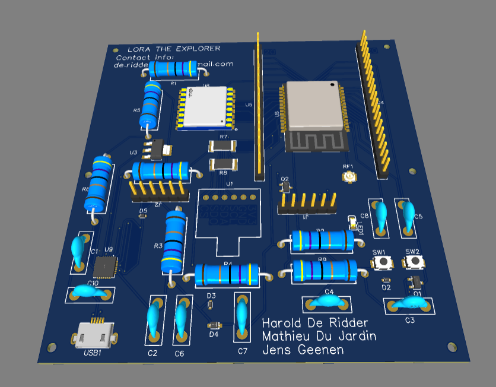
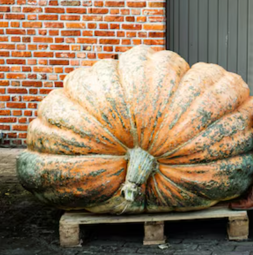

Project 4.0
2024
Context:
Elision, located at the Corda Campus in Hasselt, asked for help with the increasing number of electric vehicles and the lack of available charging stations.
Realisatie:
We created an app called Chargepoint that allows users to see which charging spots are available using a GoPro and AI model. If no spot is available, users can join a queue and swap turns. The system also shows peak usage hours.
My role was to set up and configure the IoT component: a camera takes a photo every 20 seconds, processes it, and uploads it to an Amazon S3 bucket where the AI fetches and analyzes it.
What I learned: Working with Amazon S3, image preprocessing, and integrating hardware with cloud services for real-time AI applications.
📄 View Document
Project Gladiolen
2025
Context:
This project aimed to track the collection of reusable cups at the Gladiolen music festival, using smart bins with sensors and a real-time dashboard for organizers.
Realisatie:
We built a system that registers when a cup is placed into a bin and sends data to the cloud. The system displayed statistics and live bin statuses through a web dashboard.
I integrated the sensor system, handled cloud connectivity via MQTT, and built the database structure behind the dashboard.
What I learned: Combining real-time IoT data with user-friendly web dashboards and managing data over a busy wireless network.
📄 View Document

Lora the Explorer
2023
Context:
This project explored the use of LoRaWAN communication in emergency situations. We developed a payload launched via a weather balloon that could provide long-range communication during disasters or power outages.
Realisatie:
The balloon carried a custom-built transmitter using LoRa to broadcast data from high altitudes. It simulated a mobile base station for crisis scenarios where no infrastructure is available. The system was tested live, and real-time data (GPS + telemetry) was successfully sent to ground stations via The Things Network.
What I learned:
This project taught me how to work with LoRa hardware, antenna placement, telemetry encoding, and how to build fault-tolerant systems for unpredictable environments.
🎈 Watch Project Video

PomPaul – Smart Greenhouse
2023
Context:
In our second year IoT course, we were asked to automate the pumpkin greenhouse of a Thomas More teacher. He participates yearly in giant pumpkin contests and needed help improving growing conditions.
Realisatie:
We installed sensors to monitor temperature, CO₂ and light, and programmed logic to open windows or doors when needed. Water is pumped at night and stored in large tanks to warm up during the day. We built an app to display real-time graphs and allow manual control. A livestream was also added.
What I learned:
Applying sensor-based automation in a real environment, creating control systems, and combining IoT with UI/UX and hardware prototyping.